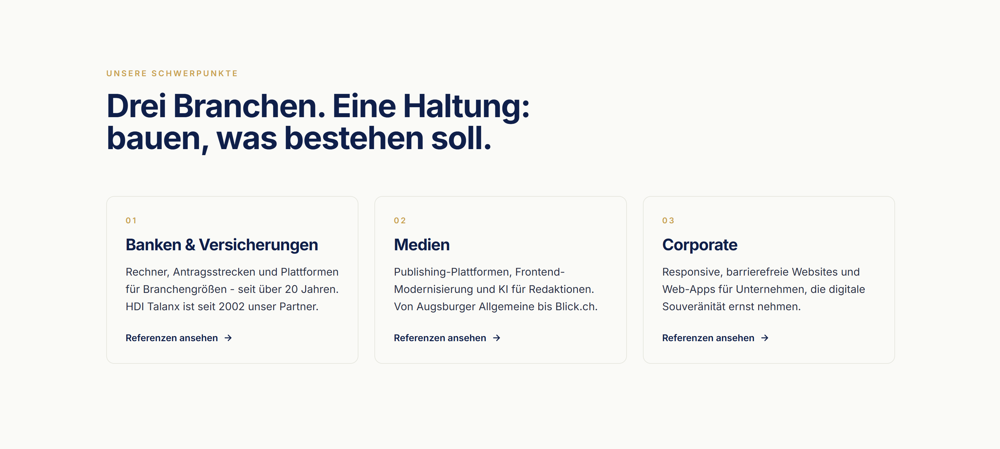

Digital Consultancy Website Rebuild

The Challenge
A Berlin digital consultancy (~50 staff) that has been building content, data, AI, and e-commerce platforms for banks, insurers, and media houses since 2002. Their existing marketing site no longer reflected the work - dated visual language, no structured content for references or open positions, no clear story for prospective clients or hires. The brief: a static, fast, SEO-solid rebuild with a content model the team can extend without developer involvement.
The Solution
A full Astro 5 rebuild on a navy-anchored design system, with MDX-driven content collections for case studies, news, and open positions. Static output deployed to Cloudflare Pages, with a Workers-based contact form planned for phase 2. Sole designer and developer on the project.
Design System
- Colour:navy foundation (50-950 scale anchored on #08122e), warm gold accent (#e0bd6e), ink grays, cream paper (#fafaf7)
- Typography:Inter Variable, with sensible system-ui fallbacks
- Layout tokens:80rem container, 44rem prose width, navy-tinted card shadows
- Components:Section, Container, Button, Pill, Eyebrow, all built once and reused across page templates
Information Architecture
- Home:hero with Berlin Fernsehturm photograph, three-pillar value prop, service grid, logo cloud, featured references, awards, CTA
- Services:Content Management, Data, AI, E-Commerce - each with its own page
- References:filterable index of client case studies, individual reference pages
- News:chronological feed with RSS
- Careers:open positions with structured metadata, application email
- About / Contact / Legal

Content Model
Three Zod-validated content collections in MDX so editors work in plain markdown:
- References:title, client, industry (banks/insurance, media, corporate), services array, year, 280-char summary, optional client logo SVG, featured flag, draft flag
- News:title, publish date, summary, tags, draft flag
- Jobs:title, location (default Berlin/Remote), type (full-time/part-time/student/intern), summary, application email, open flag
SEO & Performance
- Organization JSON-LD on every page
- Per-page Open Graph images generated at build time with astro-og-canvas
- Sitemap and RSS feed auto-generated from the content collections
- Full favicon set (SVG, PNG, Apple touch, web manifest)
- Static HTML output - no client-side framework runtime on most pages
- Lighthouse target ≥90 across all four categories
Internationalisation
German-only at launch, but the routing and content schemas are scaffolded so an English locale can be added without restructuring - separate content folders per locale, locale-aware sitemap entries, no hardcoded strings in components.
Stack
- Framework:Astro 5.1 with the MDX, Sitemap, and RSS integrations
- Styling:Tailwind 4 via the Vite plugin, design tokens in a single global stylesheet
- OG images:astro-og-canvas + canvaskit-wasm
- Hosting:Cloudflare Pages (static), Wrangler config in repo for phase 2 contact-form Worker
- Type safety:astro check in the build pipeline, Zod for content schemas
Status
In progress, launching soon. Remaining pre-launch items: finalise legal copy, swap placeholder reference imagery, wire up Plausible analytics, hit the Lighthouse target, complete an axe DevTools pass, and validate structured data with Google Rich Results.